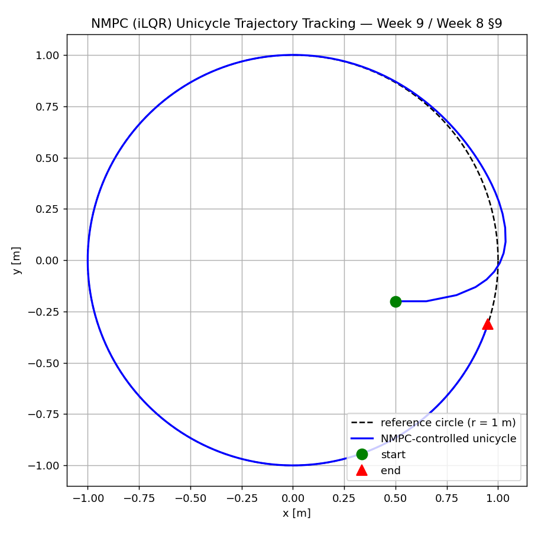
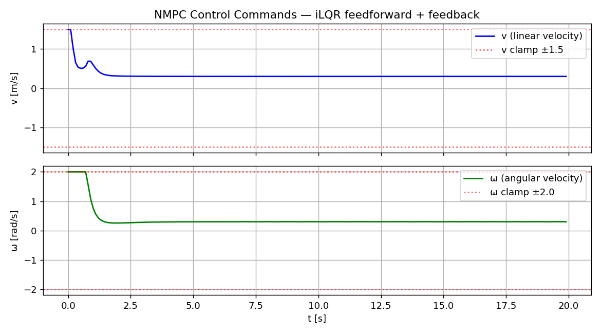
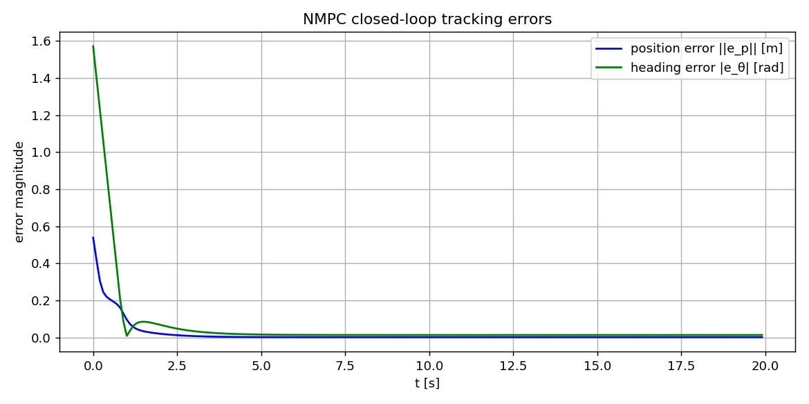

Company Brief: SkyDynamics Robotics
Scenario: SkyDynamics Robotics is developing a next-generation autonomous ground robot platform for warehouse logistics. Your team has collected 30 seconds of sensor data (odometry, IMU, and reference trajectory) from a prototype run. As part of this technical challenge, you will implement three control strategies as ROS2 nodes and compare their performance on the recorded data.
Provided Bag Data
| Topic | Message Type | Rate | Description |
|---|---|---|---|
/odom | nav_msgs/Odometry | 50 Hz | Robot odometry (position, orientation, velocity) |
/imu | sensor_msgs/Imu | 200 Hz | Inertial measurement unit data |
/reference_trajectory | geometry_msgs/PoseStamped | 50 Hz | Desired waypoint trajectory |
Deliverables
- A PID controller ROS2 node with anti-windup and runtime-tunable gains
- An LQR controller ROS2 node using scipy Riccati solver with state-space model
- An MPC controller ROS2 node with horizon-based trajectory optimisation
- A launch file that replays bag data and runs all three controllers simultaneously
- A quantitative comparison: rise time, overshoot, steady-state error, and computation time
Evaluation Criteria
- Code Quality: Clean ROS2 node structure, proper QoS configuration, parameter declarations
- Control Theory: Correct discrete-time implementation, stability analysis, gain tuning rationale
- Systems Thinking: Modular architecture, proper topic naming, error handling
- Communication: Ability to explain design decisions and trade-offs during the follow-up interview
Skills You Will Demonstrate
- Explain the architecture of a ROS2 control node, including publishers, subscribers, timers, and parameter servers, and describe how they map to classical control-loop components.
- Implement PID, LQR, and MPC controllers as standalone ROS2 Python nodes that subscribe to odometry and publish velocity commands.
- Describe the
ros2_controlframework and its layered architecture: hardware interface, controller manager, and controller plugins. - Configure Quality of Service (QoS) policies for control topics, choosing appropriate reliability and deadline settings for real-time performance.
- Compare and contrast MATLAB/Simulink and ROS2 implementations of the same control algorithm, identifying trade-offs in prototyping speed, real-time guarantees, and deployment readiness.
- Use ROS2 parameters and launch files to switch between controller types and tune gains at runtime without recompilation.
- Record, replay, and analyse control performance data using
rosbag2, extracting metrics such as rise time, overshoot, and steady-state error. - Design a modular ROS2 control architecture that separates state estimation, controller logic, and actuation into distinct nodes communicating over well-defined topics.
Recommended Approach (3-hour session)
Week 8 Exam Recall
Review nonlinear control optimization: Pontryagin's Minimum Principle, iLQR/DDP, and nonlinear MPC for robotic systems. Discuss how the optimized controller gains from Week 8 (for SMC, adaptive, robust, backstepping, NMPC) translate to real ROS2 nodes. Warm-up Q&A.
Part 1: Why ROS2 for Control Engineers?
ROS2 vs ROS1, DDS middleware, ros2_control framework overview, the control loop in ROS2, industry adoption.
Part 2: Implementing PID as a ROS2 Node
PID theory recap, full Python node implementation, anti-windup, QoS configuration, runtime parameter tuning.
Part 3: Implementing LQR as a ROS2 Node
LQR theory recap, Riccati solver in Python, state-space model from odometry, full working node.
Break
10-minute break.
Part 4: Implementing MPC as a ROS2 Node
MPC theory recap, QP formulation, scipy solver, predicted trajectory publishing for RViz, full working node.
Part 5: Extending to All 7 Controllers
Brief implementation guide for Computed Torque, Adaptive, Robust, Backstepping, and SMC as ROS2 nodes. Unified launch file.
Part 6: Comparison Lab
Hands-on activities: implement, compare PID vs LQR vs MPC on TurtleBot3 simulation. Record rosbag data and plot metrics.
Wrap-Up & Quiz
Key takeaways, quick quiz, preview of Week 10 topics.
Part 1: Why ROS2 for Control Engineers?
1.1 ROS2 vs ROS1 for Real-Time Control
ROS1 was built on a custom TCP/UDP transport layer with a single-master architecture. While revolutionary for robotics research, it lacked deterministic communication, had no built-in lifecycle management, and was unsuitable for safety-critical or real-time control. ROS2 addresses every one of these shortcomings:
DDS Middleware
ROS2 uses the Data Distribution Service (DDS) standard, an industrial-strength publish-subscribe middleware. DDS provides configurable Quality of Service (QoS) policies including reliability (best-effort vs reliable), durability, deadline, and liveliness — critical for control loops that must meet timing guarantees.
Lifecycle Nodes
Managed lifecycle nodes (unconfigured → inactive → active → finalized) allow orderly startup and shutdown of controller nodes. This prevents the common ROS1 problem of a controller publishing commands before the state estimator is ready.
QoS Policies for Control
For a 50 Hz control loop, set deadline=20ms and reliability=BEST_EFFORT to ensure the controller always has the freshest data. For parameter updates, use reliability=RELIABLE to guarantee delivery.
Real-Time Executor
ROS2 supports custom executors, including the StaticSingleThreadedExecutor for deterministic callback scheduling. Combined with Linux RT-PREEMPT patches, sub-millisecond jitter is achievable.
1.2 The ros2_control Framework
The ros2_control framework provides a standardised architecture for robot control. It separates the concerns of hardware abstraction, controller logic, and controller lifecycle management:
- Hardware Interface: Abstracts the physical robot. Provides
state_interfaces(e.g., joint position, velocity) andcommand_interfaces(e.g., effort, velocity). Plugins exist for many robots (UR, Franka, TurtleBot3). - Controller Manager: A central node that loads, configures, activates, and deactivates controller plugins at runtime. Manages the real-time control loop (typically 500–1000 Hz).
- Controller Plugins: Implement specific control algorithms (e.g.,
joint_trajectory_controller,diff_drive_controller,pid_controller). Custom controllers can be written as plugins.
1.3 Industry Adoption
Every major robotics company uses ROS2 in production or development: Boston Dynamics (for internal tooling), Open Robotics (reference implementation), Universal Robots (ROS2 driver), NVIDIA Isaac (ROS2 integration), Amazon (warehouse robots), and countless startups. Understanding ROS2 is now a mandatory skill for control engineers working in robotics.
1.4 The Control Loop in ROS2
A typical ROS2 control loop consists of the following components, mapped to classical control theory concepts:
- Timer callback at fixed rate (e.g., 50 Hz) — the sampling period \(T_s\)
- Subscriber to
/odom— state measurement \(y_k\) (or \(\hat{x}_k\) from state estimator) - Subscriber to
/reference_trajectory— reference signal \(r_k\) - Error computation inside the callback — \(e_k = r_k - y_k\)
- Controller algorithm — computes \(u_k = f(e_k, e_{k-1}, \ldots)\)
- Publisher to
/cmd_vel— actuator command \(u_k\)
src/ros2_robotics_course/week_11/ contains complete exercise nodes for PID (exercise1_node.py), LQR (exercise2_node.py), and MPC (exercise3_node.py). This week bridges the control theory from Weeks 1–8 with those practical ROS2 implementations. New in this version: an NMPC node (w11_exercises/task_nmpc_node.py) using an iLQR back-end consistent with Week 8 §9 is provided as the nonlinear counterpart to the LQR node.
1.5 ROS2 Control Architecture Diagram
Part 2: Implementing PID Controller as a ROS2 Node
2.1 Theory Recap
The continuous-time PID control law is:
For digital implementation at sample rate \(T_s\), we use the discrete approximation:
Anti-windup is essential for any practical PID implementation. When the actuator saturates, the integral term continues to accumulate error, causing large overshoot when the error sign changes. The simplest anti-windup strategy is conditional integration: clamp the integral accumulator to a fixed range (e.g., \(\pm 10\)).
2.2 ROS2 Implementation
The following is a complete PID controller node for mobile robot position tracking. It subscribes to /odom for current state and publishes /cmd_vel for velocity commands:
2.3 Real-Time Considerations
QoS for Control Topics
Use BEST_EFFORT reliability on /odom subscription to minimise latency — in control, a late measurement is worse than a dropped one. Use KEEP_LAST with depth 1 so the controller always processes the most recent data.
Timer vs Subscriber-Driven
The timer-based approach guarantees a fixed control rate regardless of sensor rate. Alternatively, compute control in the odom_callback directly for event-driven control, but beware of variable \(\Delta t\).
Runtime Parameter Tuning
Use ros2 param set /pid_controller kp 2.0 to adjust gains without restarting the node. Add a ParameterEventHandler callback to update gains dynamically.
prev_error causes a large derivative spike on the first control step. Always set prev_error = error (not zero) at the start, or skip the derivative term on the first iteration.
Part 3: Implementing LQR Controller as a ROS2 Node
3.1 Theory Recap
The Linear Quadratic Regulator minimises the infinite-horizon cost:
The optimal control law is \(u = -Kx\), where \(K = R^{-1}B^T P\) and \(P\) solves the CARE derived in the exam recall above.
For discrete-time implementation:
where \(P\) solves the Discrete Algebraic Riccati Equation (DARE):
\[ P = A_d^T P A_d - A_d^T P B_d (R + B_d^T P B_d)^{-1} B_d^T P A_d + Q \]In Python, we use scipy.linalg.solve_continuous_are (for CARE) or scipy.linalg.solve_discrete_are (for DARE).
3.2 ROS2 Implementation
3.3 PID vs LQR Comparison
| Aspect | PID | LQR |
|---|---|---|
| Tuning Parameters | 3 gains (\(K_p, K_i, K_d\)) per axis, often heuristic | Weight matrices \(Q, R\) — principled, physically interpretable |
| Stability Guarantees | No formal guarantee; depends on tuning and plant | Guaranteed stability if \((A,B)\) controllable and \(Q \succeq 0, R \succ 0\) |
| Model Requirement | None (model-free) | Requires state-space model \((A, B)\) |
| MIMO Systems | Separate SISO loops; cross-coupling ignored | Naturally handles multi-input multi-output systems |
| Robustness | Sensitive to parameter changes; no formal margins | At least 60° phase margin, infinite gain margin |
| Computational Cost | Negligible (3 multiplications per axis) | One matrix multiply per step (Riccati solved offline) |
| ROS2 Node Complexity | ~60 lines | ~100 lines (includes scipy dependency) |
Part 4: Implementing MPC Controller as a ROS2 Node
4.1 Theory Recap
Model Predictive Control (MPC) solves an optimisation problem at each time step, computing the optimal control sequence over a prediction horizon \(N\):
subject to system dynamics \(x_{k+1} = A_d\,x_k + B_d\,u_k\) and constraints:
The key MPC principle is receding horizon: solve the optimisation, apply only the first control input \(u_0^*\), then re-solve at the next time step with updated state.
For unconstrained linear MPC, the solution is equivalent to time-varying LQR. For constrained problems, we must solve a Quadratic Program (QP) at each step using scipy.optimize.minimize or a dedicated QP solver like cvxpy.
4.2 ROS2 Implementation
4.3 MPC Node Internal Loop
4.4 Discussion: Computation Time vs Horizon Length
The MPC solver's computation time grows with the prediction horizon \(N\). For a 4-state, 2-input system using scipy.optimize.minimize with SLSQP:
| Horizon \(N\) | Decision Variables | Typical Solve Time | Max Control Rate |
|---|---|---|---|
| 5 | 10 | ~0.5 ms | ~2000 Hz |
| 10 | 20 | ~2 ms | ~500 Hz |
| 20 | 40 | ~8 ms | ~125 Hz |
| 50 | 100 | ~50 ms | ~20 Hz |
scipy.optimize.minimize with a dedicated QP solver such as OSQP or qpOASES, which offer 10–100x speed improvements. The cvxpy library with OSQP backend is recommended for rapid prototyping with near-production performance.
Part 4b: NMPC via iLQR as a ROS2 Node — Week 8 Integration
The MPC node in Part 4 solves a linearized quadratic program at each step — the classical linear MPC. Week 8 extended this to nonlinear MPC (NMPC) using an iLQR (iterative LQR) back-end that handles the full nonlinear robot dynamics with a Gauss-Newton Riccati backward pass.
Why NMPC here? The unicycle mobile robot is nonlinear (trig in the kinematics, nonholonomic constraint). Linear MPC requires a fresh linearisation per step and still misses large-angle manoeuvres. iLQR operates directly on the nonlinear model and gives a local feedback policy as well as an open-loop plan — exactly matching the Week 8 §9 derivation.
4b.1 NMPC Node Structure
The provided file w11_exercises/task_nmpc_node.py is a minimal NMPC node for the unicycle:
- Subscribes to
/odom(current pose). - Every 100 ms (10 Hz), rolls out a short nominal trajectory using the current warm-start control sequence.
- Runs 3–5 iLQR iterations with line search on \(\alpha\).
- Publishes only the first optimal control \(u_0^\star = [v^\star, \omega^\star]\) as a
geometry_msgs/Twiston/cmd_vel. - Shifts the solution for the next sample (warm-start).
4b.2 Running the NMPC Node
4b.3 Mapping to Week 8 §9 Derivation
| Week 8 §9 symbol | Python variable in task_nmpc_node.py | Meaning |
|---|---|---|
| \(N\) | self.N = 15 | prediction horizon (steps) |
| \(\Delta t\) | self.dt = 0.1 | sample / prediction step (s) |
| \(\bar u_k\) | self.U_warm[k,:] | warm-start control sequence |
| \(A_k, B_k\) | A, B in linearize() | finite-difference Jacobians |
| \(Q_{uu}, Q_{ux}, Q_u\) | Quu, Qux, Qu | Q-function blocks |
| \(k_k, K_k\) | k_ff[k], K_fb[k] | feedforward + feedback |
| \(\alpha\) | alpha in line-search loop | step size |
| \(\mu\) | self.mu | LM regularisation |
Real-time note: For the 3-state unicycle with N=15 horizon, one iLQR iteration takes ~2–5 ms in pure Python. With warm-starting, 2–3 iterations per sample suffice — the 100 ms control period leaves ample margin. Higher-dimensional plants (e.g., the 12-state drone) need CasADi/acados for real-time operation.
4b.4 Simulation results
An offline closed-loop simulation of the node's iLQR logic is provided in week_09/sims/nmpc_unicycle_sim.py. It starts the unicycle off the reference circle at \((0.5, -0.2, 0)\), runs 200 control samples (20 s at 10 Hz), and produces three figures. Final metrics on the last verification run:



To regenerate: python3 week_09/sims/nmpc_unicycle_sim.py — plots land in week_09/sims/figures/. This is the non-ROS counterpart of the Week 8 lab structure (compare week_08/sims/sim_nmpc.m).
Part 5: Extending to All 7 Controllers as ROS2 Nodes
Weeks 1–8 covered seven advanced control techniques in MATLAB. Each can be implemented as a ROS2 node. Below is a brief guide for the remaining controllers not yet shown (Computed Torque, Adaptive, Robust, Backstepping, SMC):
5.1 Implementation Guides
Computed Torque Control (Week 1)
Key idea: Cancel nonlinearities with \(\tau = M(q)[\ddot{q}_d + K_d\dot{e} + K_pe] + C(q,\dot{q})\dot{q} + G(q)\).
ROS2 approach: Requires joint-level access via ros2_control's joint_trajectory_controller. Create a model computation node that subscribes to /joint_states and publishes /effort_controller/commands. The dynamics model \(M(q), C(q,\dot{q}), G(q)\) can come from URDF+KDL or a precomputed lookup table.
Adaptive Control (Week 4)
Key idea: Update unknown parameters online: \(\dot{\hat{\theta}} = -\Gamma Y^T s\).
ROS2 approach: The adaptation law runs inside the timer callback alongside the control law. Store \(\hat{\theta}\) as internal node state. Publish estimated parameters on a diagnostic topic for monitoring. Key: the adaptation gain \(\Gamma\) becomes a ROS2 parameter for tuning.
Robust Control / H-infinity (Week 5)
Key idea: Add robust compensator \(\tau_r = -\rho \frac{s}{\|s\| + \epsilon}\) to the computed torque law.
ROS2 approach: Similar to computed torque but with an additional robust term. The uncertainty bound \(\rho\) and boundary layer \(\epsilon\) become ROS2 parameters. The core computation is identical; only the control law changes.
Backstepping Control (Week 6)
Key idea: Cascaded virtual control design for strict-feedback systems.
ROS2 approach: Implement as two cascaded nodes: an outer loop node (position → desired velocity) and an inner loop node (velocity → actuator command). The outer loop publishes to a /desired_velocity topic that the inner loop subscribes to. This mirrors the cascaded Lyapunov design.
Sliding Mode Control (Week 7)
Key idea: Drive state to sliding surface \(s = \dot{e} + \Lambda e\), then apply discontinuous control \(u = u_{eq} - \eta\,\text{sgn}(s)\).
ROS2 approach: Compute the sliding surface from the error and its derivative. Replace sgn(s) with a saturation function \(\text{sat}(s/\phi)\) (boundary layer) to avoid chattering. The boundary layer width \(\phi\) and reaching gain \(\eta\) become ROS2 parameters.
5.2 Controller Complexity Comparison
| Controller | Week | Model Required? | Online Computation | ROS2 Lines (est.) | Dependencies |
|---|---|---|---|---|---|
| PID | 9 | No | 3 multiplies + sum | ~60 | numpy |
| Computed Torque | 1 | Full dynamics | Matrix inversion + multiply | ~120 | numpy, KDL |
| MPC | 3 | Linear/linearised | QP solve each step | ~130 | scipy / cvxpy |
| Adaptive | 4 | Structured (regressor) | Parameter update + control | ~100 | numpy |
| Robust / H-inf | 5 | Full + uncertainty bound | Computed torque + robust term | ~110 | numpy, KDL |
| Backstepping | 6 | Strict-feedback form | Cascaded Lyapunov computation | ~140 (2 nodes) | numpy |
| SMC | 7 | Partial (bounds) | Surface + switching law | ~90 | numpy |
| LQR | 8 | Linear state-space | 1 matrix multiply | ~100 | numpy, scipy |
5.3 Unified Launch File
The following launch file allows switching between controllers using a command-line argument:
Part 6: ROS2 Lab Exercises
This section references the lab exercises from src/ros2_robotics_course/week_11/, which provide hands-on practice with the control algorithms discussed in this lecture. The exercises are divided into two categories: MATLAB-style analysis tasks (in lab_exercises/) and ROS2 node exercises (in w11_exercises/).
6.1 Lab Analysis Tasks (Python/MATLAB-style)
Lab 1: PID Controller Design and Tuning
File: task1_pid_analysis.py
Students implement PID step response analysis for a second-order plant \(G(s) = \omega_n^2 / (s^2 + 2\zeta\omega_n s + \omega_n^2)\). They compare P-only, PI, and PID controllers, implement Ziegler-Nichols tuning, analyse frequency response, and add anti-windup with derivative filtering.
Lab 2: State-Space System Models
File: task2_state_space.py
Students build state-space models from physical systems (mass-spring-damper, DC motor, linearised quadrotor). They check controllability and observability matrices, simulate open-loop responses, and convert between transfer function and state-space representations.
Lab 3: Pole Placement Design
File: task3_pole_placement.py
Students apply Ackermann's formula and scipy.signal.place_poles to assign closed-loop eigenvalues. They design controllers meeting transient specifications (settling time, overshoot) and explore stability regions in the complex plane.
Lab 4: LQR Optimal Control
File: task4_lqr.py
Students solve the continuous algebraic Riccati equation using scipy.linalg.solve_continuous_are, design LQR controllers with different \(Q/R\) weight ratios, and apply LQR to quadrotor hover stabilisation. They verify the optimal cost \(J^* = x_0^T P x_0\) and compare with pole placement.
Lab 5: LQG Stochastic Control
File: task5_mpc_basics.py (MPC formulation section)
Students formulate the MPC optimisation problem for a double integrator, implement receding-horizon control, and compare unconstrained MPC (which recovers LQR) with constrained MPC. They observe how the prediction horizon \(N\) affects tracking performance and stability.
Lab 6: MPC Formulation
File: task6_mpc_drone.py
Students apply MPC to quadrotor trajectory tracking, handling thrust and angle constraints. They track time-varying references (circular and figure-8 trajectories) and evaluate real-time feasibility by measuring solver computation time at each step.
Lab 7: Advanced Control Comparison
File: task7_full_comparison.py
Students compare PID, LQR, and MPC on identical quadrotor tasks: hover stabilisation, sinusoidal tracking, constrained operation, and disturbance rejection. They compute performance metrics (RMSE, maximum error, total control effort, computation time) and produce a comprehensive comparison table.
6.2 ROS2 Applied Exercises
Exercise 1: PID Controller Node
File: w11_exercises/exercise1_node.py
Students implement a 3-axis PID position controller node. The node subscribes to /odom (Odometry) and /reference_trajectory (PoseStamped), computes PID control with anti-windup for each axis, and publishes /cmd_thrust_attitude (Wrench) and /tracking_error (Vector3). Students must complete the PIDController.compute() method with proportional, integral (with clamping), and derivative terms.
Exercise 2: LQR Controller Implementation
File: w11_exercises/exercise2_node.py
Students implement an LQR controller node for a linearised double-integrator model (6 states: position and velocity in 3D). They must linearise the dynamics about hover, discretise using Euler method (\(A_d = I + A_c \Delta t\)), solve the DARE using scipy.linalg.solve_discrete_are, and compute the optimal gain \(K\). The node publishes the gain matrix on /lqr_gain for monitoring.
Exercise 3: MPC-Based Trajectory Tracking
File: w11_exercises/exercise3_node.py
Students implement an MPC controller node with configurable prediction horizon \(N\), cost weights \(Q\) and \(R\), and input constraints. They must implement the discrete dynamics function, the MPC cost function (summing stage and terminal costs over the horizon), and call scipy.optimize.minimize to solve the constrained optimisation. The node publishes the predicted trajectory on /predicted_trajectory (Path) and the MPC cost on /mpc_cost (Float64) for RViz visualisation.
w11_exercises/launch/. For example:ros2 launch week_11_control_systems exercise1.launch.pyConfiguration parameters are in
w11_exercises/config/params.yaml.
Hands-On Activities
Activity 1: PID on TurtleBot3 Simulation
Objective: Implement PID position control and evaluate tracking performance.
- Launch TurtleBot3 in Gazebo:
ros2 launch turtlebot3_gazebo turtlebot3_world.launch.py - Run the PID controller node from Section 4 (or Exercise 1).
- Set a target position:
ros2 topic pub /reference geometry_msgs/PoseStamped "{pose: {position: {x: 3.0, y: 2.0}}}" --once - Record a rosbag:
ros2 bag record /odom /cmd_vel /reference -o pid_test - Plot the tracking error (\(e_x, e_y\) vs time) and the control effort (\(v_x, \omega_z\) vs time).
- Experiment with different \(K_p, K_i, K_d\) values using
ros2 param set.
Deliverable: A plot showing position tracking error for at least 3 different gain settings, with RMSE values annotated.
Activity 2: LQR with Different Q/R Matrices
Objective: Compare LQR performance under different cost weightings.
- Run the LQR controller node from Section 5 (or Exercise 2).
- Test with three \(Q/R\) configurations:
- Conservative: \(Q = \text{diag}(1,1,1,1,1)\), \(R = \text{diag}(10,10)\) — penalise control effort
- Balanced: \(Q = \text{diag}(10,10,5,1,1)\), \(R = \text{diag}(1,1)\)
- Aggressive: \(Q = \text{diag}(100,100,50,10,10)\), \(R = \text{diag}(0.1,0.1)\) — penalise state error
- For each, record rosbag data and compute: rise time, settling time, overshoot, steady-state error, total control effort \(\int u^T R\,u\,dt\).
- Compare the step response with PID from Activity 1.
Deliverable: A comparison table of performance metrics for all 3 LQR configurations and the best PID result.
Activity 3: MPC Horizon Study
Objective: Investigate the trade-off between prediction horizon and computation time.
- Run the MPC controller node from Section 6 (or Exercise 3).
- Test with three horizon lengths: \(N = 10\), \(N = 20\), \(N = 50\).
- For each horizon, measure:
- Average solve time per step (subscribe to a timing diagnostic topic or use
ros2 topic echo /mpc_cost) - Tracking RMSE on a circular reference trajectory
- Whether the control rate deadline (50 ms for 20 Hz) is consistently met
- Average solve time per step (subscribe to a timing diagnostic topic or use
- Compare the best MPC result with PID and LQR from Activities 1 and 2.
- Visualise the predicted trajectory in RViz by subscribing to
/predicted_trajectory.
Deliverable: A three-panel figure showing (a) tracking performance, (b) control effort, and (c) computation time for each \(N\), with comparison to PID and LQR overlaid.
Quick Quiz: ROS2 Control Implementation
- Q1: In a ROS2 PID controller node, why should you use
BEST_EFFORTQoS for the/odomsubscription rather thanRELIABLE?
A: In real-time control, latency matters more than guaranteed delivery.BEST_EFFORTavoids the overhead of acknowledgement and retransmission, ensuring the controller always processes the most recent sensor data rather than waiting for old messages to be retransmitted. - Q2: What is the key advantage of computing the LQR gain matrix \(K\) once at initialisation rather than re-solving the Riccati equation at every control step?
A: For a time-invariant system, \(K\) does not change, so solving CARE/DARE once at startup saves significant computation. The online cost is reduced to a single matrix-vector multiplication \(u = -Kx\), which is O(n^2) instead of the O(n^3) Riccati solve. - Q3: In the MPC node, why do we publish the predicted trajectory on a separate topic?
A: The predicted trajectory (anav_msgs/Pathmessage) allows visualisation in RViz to debug the MPC's lookahead behaviour. It also enables logging and post-hoc analysis of how the predictions evolve over time, which is invaluable for tuning horizon length and cost weights. - Q4: Explain the receding-horizon principle in one sentence. Why does MPC re-solve at every step instead of applying the full optimal sequence?
A: MPC applies only the first control input and re-solves because the actual state will deviate from the predicted trajectory due to model mismatch, disturbances, and discretisation errors; re-solving provides feedback and robustness. - Q5: A student's PID node works in simulation but exhibits violent oscillations on a real robot. Name two likely causes related to the ROS2 implementation (not the gains).
A: (1) Variable or excessive latency in the/odomtopic causing stale state estimates, leading to instability at the chosen gains. (2) Thedtused in the discrete PID formula is assumed constant but the actual callback interval varies, causing incorrect derivative and integral computation. Using timestamps from the message header (not wall-clock time) and the timer-based approach helps.
Summary
Key Takeaways
- ROS2 is the bridge from theory to deployment. The control algorithms you designed in MATLAB during Weeks 1–8 (PID, Computed Torque, MPC, Adaptive, Robust, Backstepping, SMC, LQR/LQG) can all be implemented as ROS2 nodes using Python and standard libraries (NumPy, SciPy).
- The ROS2 control node pattern is consistent: Declare parameters → subscribe to state → subscribe to reference → compute control law in timer callback → publish command. This pattern applies to every controller type.
- Real-time considerations are paramount. QoS policies, timer-based control loops, and careful management of computational budget (especially for MPC) are what separate a working simulation from a deployable system.
- MATLAB vs ROS2 is not either/or: Use MATLAB/Simulink for rapid prototyping and analysis (transfer functions, root locus, Bode plots). Use ROS2 for integration testing, hardware deployment, and multi-node systems. Many teams generate C code from Simulink and wrap it in a ROS2 node.
- The
ros2_controlframework provides a production-grade architecture for hardware abstraction and controller lifecycle management. For research, custom nodes (as shown today) offer more flexibility. - rosbag2 is your best friend for analysis. Record
/odom,/cmd_vel, and/referenceduring experiments. Replay and analyse offline to compute performance metrics without re-running experiments.
MATLAB vs ROS2: When to Use Which
| Aspect | MATLAB/Simulink | ROS2 |
|---|---|---|
| Prototyping speed | Very fast (built-in toolboxes) | Moderate (manual implementation) |
| Analysis tools | Bode, root locus, Nyquist built-in | matplotlib, custom scripts |
| Hardware integration | Limited (Simulink Real-Time) | Excellent (drivers for all major robots) |
| Multi-robot systems | Difficult | Native support (namespaces, DDS) |
| Real-time performance | Simulink Coder generates RT code | RT-PREEMPT + custom executor |
| Cost | Expensive licence | Free and open source |
| Industry standard | Automotive, aerospace | Robotics, drones, warehouse automation |
ros2_control effort interface and URDF-derived dynamics models.
Running the ROS2 Demo
Build and Source
Launch the Demo
This command replays the recorded bag data at 2x speed, starts three solution nodes (PID, LQR, MPC), and opens RViz2 with a preconfigured layout.
ROS2 Topics
| Topic | Type | Source | Description |
|---|---|---|---|
/odom | nav_msgs/Odometry | Bag | Robot odometry at 50 Hz |
/imu | sensor_msgs/Imu | Bag | IMU data at 200 Hz |
/reference_trajectory | geometry_msgs/PoseStamped | Bag | Desired trajectory at 50 Hz |
/cmd_vel | geometry_msgs/Twist | Nodes | Controller velocity commands |
Expected RViz2 Output
RViz2 will display the robot's odometry path (white), the reference trajectory (green), and the controller command markers. You should see the robot following the reference trajectory with the three controllers producing slightly different tracking behaviour.
Troubleshooting
- RViz2 crashes on launch: The launch file filters
snappaths fromLD_LIBRARY_PATHautomatically. If RViz2 still crashes, try:export LD_LIBRARY_PATH=$(echo $LD_LIBRARY_PATH | tr ':' '\n' | grep -v snap | tr '\n' ':') - No data visible: Ensure the bag file exists at
w11_exercises/bag_data/synthetic_control/. Re-runcolcon buildif needed. - QoS mismatch warnings: The bag uses default QoS. If your subscriber uses
BEST_EFFORT, switch toRELIABLEor use--qos-profile-overrides-path.
Appendix: Review Material — LQR/LQG Optimal Control
Question 1 — Derivation of the Continuous Algebraic Riccati Equation (25 marks)
Consider a linear time-invariant system:
\[ \dot{x} = Ax + Bu, \qquad x(0) = x_0 \]with the infinite-horizon quadratic cost:
\[ J = \int_0^{\infty} \bigl(x^T Q\,x + u^T R\,u\bigr)\,dt \]where \(Q \succeq 0\) and \(R \succ 0\).
(a) Starting from the Hamilton–Jacobi–Bellman (HJB) equation with value function \(V(x) = x^T P\,x\), derive the continuous algebraic Riccati equation (CARE). Show every step of the derivation. (15 marks)
(b) Explain how the weighting matrices \(Q\) and \(R\) affect the closed-loop pole locations. In particular, describe what happens as \(R \to 0\) and as \(Q \to 0\). (10 marks)
Model Answer (a) — CARE Derivation
Step 1: Assume the optimal value function takes the quadratic form \(V^*(x) = x^T P\,x\) where \(P = P^T \succ 0\). The HJB equation for the infinite-horizon problem is:
\[ 0 = \min_{u}\Bigl\{x^T Q\,x + u^T R\,u + \frac{\partial V^*}{\partial x}^T(Ax + Bu)\Bigr\} \]Step 2: Compute the gradient: \(\frac{\partial V^*}{\partial x} = 2Px\). Substituting:
\[ 0 = \min_{u}\bigl\{x^T Q\,x + u^T R\,u + 2x^T P(Ax + Bu)\bigr\} \]Step 3: Minimise with respect to \(u\). Taking the derivative and setting to zero:
\[ \frac{\partial}{\partial u}\bigl[u^T R\,u + 2x^T P B\,u\bigr] = 2R\,u + 2B^T P\,x = 0 \] \[ \implies u^* = -R^{-1}B^T P\,x \]Step 4: Substitute \(u^*\) back into the HJB equation:
\[ 0 = x^T Q\,x + x^T P B R^{-1} R\, R^{-1} B^T P\,x - 2x^T P B R^{-1} B^T P\,x + 2x^T P A\,x \] \[ 0 = x^T\!\bigl[Q + PA + A^T P - PBR^{-1}B^T P\bigr]x \]Step 5: Since this must hold for all \(x\), we obtain the CARE:
\[ \boxed{A^T P + PA - PBR^{-1}B^T P + Q = 0} \]The optimal state-feedback gain is \(K = R^{-1}B^T P\), yielding \(u^* = -Kx\).
Model Answer (b) — Effect of Q and R on Closed-Loop Poles
The closed-loop system is \(\dot{x} = (A - BK)x\), where \(K = R^{-1}B^T P\). The poles are the eigenvalues of \(A_{cl} = A - BK\).
- As \(R \to 0\): The control cost vanishes, so the controller uses arbitrarily large inputs. The gain \(K\) grows without bound, and the closed-loop poles move far into the left-half plane (very fast response). In the limit, the LQR poles approach the transmission zeros of the system or recede to infinity along Butterworth patterns.
- As \(Q \to 0\): The state penalty vanishes, so there is no incentive to drive the state to zero. The gain \(K \to 0\), and the closed-loop poles approach the open-loop poles of the plant. The system behaves almost as if there is no feedback.
- Increasing \(Q/R\) ratio: Moves poles further into the LHP (faster, more aggressive control, higher bandwidth). Decreasing \(Q/R\) moves poles closer to the imaginary axis (slower, more conservative, less control effort).
A key property of LQR is that all closed-loop poles are guaranteed to lie in the open left-half plane (stability) and the system has at least 60° phase margin and infinite gain margin (robustness).
Question 2 — The Separation Principle in LQG (25 marks)
Consider a stochastic LTI system with process noise \(w\) and measurement noise \(v\):
\[ \dot{x} = Ax + Bu + w, \qquad y = Cx + v \]where \(w \sim \mathcal{N}(0, W)\) and \(v \sim \mathcal{N}(0, V)\).
(a) State the separation principle (also called the certainty-equivalence principle) for LQG control. Explain why it allows the state estimator (Kalman filter) and the state-feedback controller (LQR) to be designed independently. (15 marks)
(b) Discuss scenarios where you would use LQG instead of LQR. What are the practical limitations of LQG? (10 marks)
Model Answer (a) — The Separation Principle
Statement: For a linear system with Gaussian noise and a quadratic cost, the optimal controller consists of two independent components:
- Kalman filter (state estimator): Computes the optimal state estimate \(\hat{x}\) using the system model and noisy measurements: \[ \dot{\hat{x}} = A\hat{x} + Bu + L(y - C\hat{x}), \qquad L = \Sigma C^T V^{-1} \] where \(\Sigma\) solves the filter algebraic Riccati equation: \(A\Sigma + \Sigma A^T - \Sigma C^T V^{-1} C\Sigma + W = 0\).
- LQR gain: Computes the optimal feedback \(u = -K\hat{x}\), where \(K = R^{-1}B^T P\) and \(P\) solves the standard CARE.
Why independent design works: The estimation error \(\tilde{x} = x - \hat{x}\) evolves as \(\dot{\tilde{x}} = (A - LC)\tilde{x} + w - Lv\), which is independent of the control input \(u\). The closed-loop eigenvalues are the union of the LQR poles (eigenvalues of \(A - BK\)) and the Kalman filter poles (eigenvalues of \(A - LC\)). Since these sets are decoupled, each component can be designed without knowledge of the other.
Model Answer (b) — When to Use LQG over LQR
- Noisy measurements: When sensor data is corrupted by significant noise (e.g., IMU drift, lidar noise), LQR alone would amplify noise through the feedback gain. The Kalman filter in LQG provides optimal noise filtering.
- Incomplete state measurement: When not all states are directly measurable (e.g., velocity must be estimated from position), the Kalman filter reconstructs unmeasured states.
- Process disturbances: When the system is subject to stochastic disturbances (wind gusts, ground vibration), LQG accounts for these statistically through the process noise covariance \(W\).
Practical limitations of LQG:
- No guaranteed robustness margins: Unlike LQR, LQG does not have guaranteed gain/phase margins. The Loop Transfer Recovery (LTR) technique can partially restore robustness.
- Model accuracy: Performance degrades significantly if the system model or noise covariances \(W, V\) are inaccurate.
- Linearity assumption: LQG is optimal only for linear systems with Gaussian noise. For nonlinear systems, Extended Kalman Filters (EKF) or Unscented Kalman Filters (UKF) are needed, but optimality guarantees are lost.
- Computational cost: Requires solving two Riccati equations and running the Kalman filter in real time, though this is typically manageable for modern hardware.